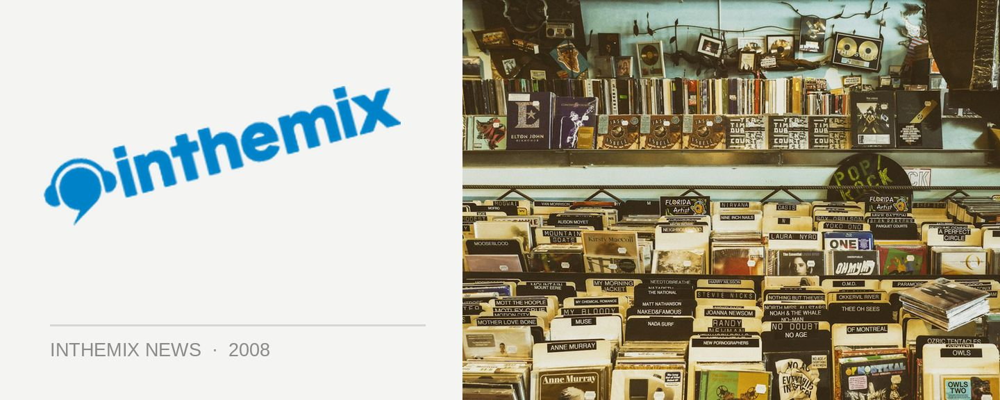

The Loft ranks in world’s top 100 bars
Known as a classy way to spend your leisure time and as one of the nicest options on the picturesque harbourside strip that is King Street Wharf, The Loft has been voted as a venue that ranks among the world’s top 100 bars. Check out www.worldsbestbars.com. For the results – nearly 1,5000 drinking spots were competing for the prize, and The Loft was one of only the six Australian bars to grab itself a spot in the top 100.
While it’s know by some as a swanky cocktail venue, The Loft has also hosted some A-grade dance music acts over the last six months that have included none other than Groove Armada, Crazy Penis, Norman Jay and more. It’s also become a Sunday destination for quality underground tunes with the weekly Cut The Rug night, featuring the talents of Somatik, Jamie Lloyd and Jimi Polar as well as solid supply of local and international guest.
Cut The Rug takes over The Loft every Sunday, check the ITM ‘Whats On’ for details of lineup and guests.